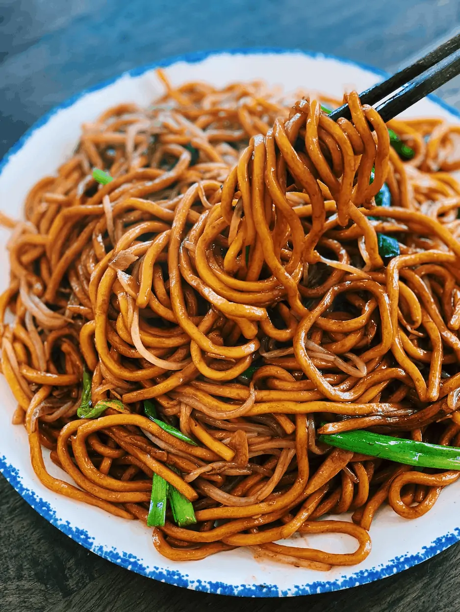

Noodles

Noodles are a versatile and popular dish made from unleavened dough, typically consisting of flour, water, and sometimes eggs. They come in various shapes and sizes, and can be boiled, stir-fried, or served in soups. Whether it's the long strands of spaghetti, the chewy udon, or the delicate rice noodles, they serve as a base for countless dishes across different cuisines, absorbing rich flavors from sauces and broths. Noodles are cherished for their simplicity, flexibility, and ability to satisfy in both savory and hearty meals.
Ingredients:
- 200g noodles (egg noodles, rice noodles, or any type you prefer)
- 2 tablespoons vegetable oil (or any cooking oil)
- 1 small onion, thinly sliced
- 2 garlic cloves, minced
- 1 medium carrot, julienned or sliced into thin strips
- 1 bell pepper, thinly sliced (any color)
- 1 cup cabbage, shredded (optional)
- 100g protein (chicken, shrimp, tofu, or beef – optional)
- 2-3 tablespoons soy sauce
- 1 tablespoon oyster sauce (optional)
- 1 tablespoon sesame oil (for extra flavor, optional)
- 1 teaspoon sugar (to balance the flavors)
- 1/2 teaspoon crushed red pepper flakes (optional, for spice)
- 1 tablespoon fresh cilantro or green onions, chopped (for garnish)
- Lime wedges (for serving, optional)
Steps to Cook:
- Cook the Noodles: Bring a large pot of water to a boil. Add the noodles and cook according to package instructions, usually 4-6 minutes.Drain the noodles and rinse them under cold water to stop the cooking process. Set aside.
- Prepare the Vegetables: While the noodles are cooking, thinly slice the onion, garlic, carrots, bell pepper, and any other vegetables you're using (e.g., cabbage).
- Cook the Protein (if using): If you’re using chicken, shrimp, or beef, heat 1 tablespoon of oil in a large skillet or wok over medium-high heat.Add the protein and cook until browned and cooked through, about 4-5 minutes for chicken or shrimp. Remove the protein from the skillet and set aside.
- Stir-Fry the Vegetables: In the same skillet, add another tablespoon of oil if needed.Add the sliced onion and minced garlic, and sauté for 1-2 minutes until fragrant.Add the carrots, bell pepper, and any other vegetables you're using. Stir-fry for 3-4 minutes until tender-crisp.
- Combine Noodles and Sauce: Add the cooked noodles to the skillet with the vegetables.In a small bowl, mix together the soy sauce, oyster sauce (if using), sesame oil, sugar, and red pepper flakes (if using).Pour the sauce over the noodles and toss everything together, ensuring the noodles are well-coated.
- Add Protein (if using): If you cooked any protein earlier, add it back to the skillet and mix everything together.Stir-fry for another 2-3 minutes to ensure everything is heated through.
- Garnish and Serve: Taste and adjust seasoning with more soy sauce or a pinch of sugar if needed.Serve the stir-fried noodles with chopped cilantro or green onions as garnish, and squeeze lime juice over the top for an extra burst of flavor.